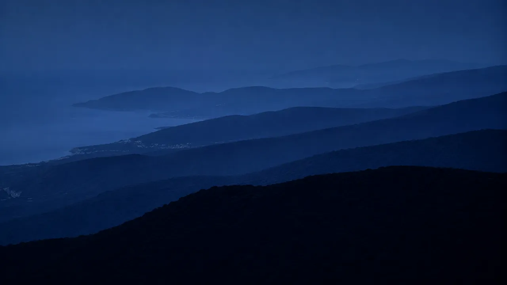

Web Essentiel
À partir de600€
- ✓ 3 pages professionnelles
- ✓ 100% responsive mobile
- ✓ Bouton appel / contact direct
- ✓ SEO local Gassin inclus
- ✓ Propriété 100% à vous

Perché à 200 mètres d'altitude avec une vue à 360° sur le Golfe — Gassin attire une clientèle d'exception qui réserve, cherche et compare en ligne avant d'arriver. Agence immobilière, conciergerie, restaurant ou broker yacht : je crée des sites sur mesure à la hauteur de ce village d'exception.
Gassin est l'un des 184 Plus Beaux Villages de France officiels. Perché au sommet des collines du Golfe de Saint-Tropez, il offre une vue à 360° unique : le Golfe et les yachts d'un côté, les Maures et le massif des Alpes de l'autre.
Ce label attire chaque année une clientèle d'exception — agences immobilières de prestige, propriétaires de villas, conciergeries haut de gamme, restaurants gastronomiques. Des professionnels qui partagent avec Saint-Tropez le même positionnement premium et la même clientèle internationale exigeante.
Je crée des sites internet pour les professionnels de Gassin qui correspondent à l'image d'excellence de cette commune — rapides, élégants, multilingues, référencés sur les requêtes premium du Golfe de Saint-Tropez.
Vos concurrents n'ont pas encore de site optimisé à Gassin. C'est votre fenêtre d'opportunité — elle ne restera pas ouverte longtemps.Obtenir mon devis gratuit
Gassin partage avec Saint-Tropez une clientèle internationale exigeante. Chaque professionnel de prestige a ses propres besoins en ligne — je maîtrise les spécificités de chacun dans le Golfe de Saint-Tropez.
Listings filtrables, galerie villas premium, multilingue FR/EN/DE. Chatbot leads, brochure automatique. Visible sur "agence immobilière Gassin", "villa à vendre Golfe Saint-Tropez".
Catalogue de flotte haut de gamme, galerie multimédia, formulaire de réservation. Référencé sur "broker yacht Golfe Saint-Tropez", "location yacht Var 83", "charter bateau prestige".
Galerie vue panoramique, menu en ligne, réservation WhatsApp ou directe, multilingue FR/EN/IT. Référencé sur "restaurant Gassin", "dîner vue Golfe Saint-Tropez", "table gastronomique Var 83".
Électriciens, prestataires de service, commerce local — sites rapides avec bouton d'appel direct et SEO Gassin pour capter la demande locale et saisonnière.
Votre activité n'est pas listée ? J'accompagne tous les professionnels de Gassin — guide touristique, photographe, architecte, paysagiste, prestataire événementiel.
Discutons de votre projetGassin est labellisé Plus Beau Village de France. Ce label attire une clientèle internationale qui cherche l'exceptionnel et qui est prête à payer pour l'avoir. Des visiteurs qui réservent une villa, une table gastronomique ou un service de conciergerie en ligne — bien avant d'arriver dans le Golfe.
Dans ce contexte, un site internet médiocre nuit directement à votre image. La clientèle de Gassin est la même que celle de Saint-Tropez — exigeante, internationale, connectée. Elle s'attend à trouver un site à la hauteur de la destination. Si le vôtre est lent, vieilli ou difficile à naviguer sur mobile, elle passe au suivant.
Les requêtes Google liées à Gassin ont une caractéristique précieuse : la concurrence en ligne est encore très faible. Contrairement à Saint-Tropez où des dizaines de sites se disputent les premières places, à Gassin vous pouvez atteindre la première page Google en quelques semaines avec un site correctement optimisé.
Chaque site que je crée pour un professionnel de Gassin est optimisé dès le départ : balise H1 géolocalisée Gassin, Schema.org LocalBusiness, Google Business Profile configuré et lié au site, sitemap soumis à Google Search Console. Le label Plus Beau Village est aussi un argument SEO — il génère des requêtes spécifiques que vos concurrents hors label ne peuvent pas cibler.
À 10 minutes de Saint-Tropez, Gassin partage le même bassin économique. Un professionnel de Gassin peut cibler les requêtes des deux communes — "agence immobilière Saint-Tropez", "restaurant Golfe Saint-Tropez", "broker yacht Saint-Tropez" — et étendre significativement sa surface de visibilité SEO. Je suis basé à Saint-Tropez, à 10 minutes de Gassin, et je connais parfaitement ce territoire.
À Gassin, la première place est encore libre. Elle ne le restera pas.
Sud Web Project — GassinCes réalisations illustrent ce que je crée pour les professionnels de Gassin et du Golfe de Saint-Tropez — des sites qui convertissent une clientèle exigeante.

Site multilingue FR/EN/DE/IT, galerie premium, chatbot leads, brochure automatique. Conçu pour capter des mandats et des acheteurs internationaux à Gassin et dans le Golfe.
Voir la démo
7 pages, multilingue FR/EN/IT, réservation WhatsApp, galerie immersive. 100/100 PageSpeed. La référence pour les restaurants avec vue panoramique à Gassin.
Voir la démo
6 pages, 100/100 PageSpeed. Bouton d'urgence, devis en ligne. SEO "artisan Gassin", "électricien Golfe Saint-Tropez". Résultats en 4 semaines.
Voir la démo
Agence immobilière, conciergerie, broker yacht, restaurant… Devis gratuit sous 24h. Maquette avant de commencer. Livraison en quelques jours.
Demander un devis gratuitJe cible spécifiquement les requêtes liées au label : "Plus Beau Village de France Var", "village perché Golfe Saint-Tropez". Un trafic qualifié que vos concurrents sans label ne peuvent pas capter.
À Gassin, peu de concurrents ont un site optimisé. Vous pouvez atteindre la première page Google en 4 à 6 semaines — bien plus vite qu'à Saint-Tropez ou Sainte-Maxime.
Code à la main, images WebP optimisées, chargement en moins d'une seconde. Google récompense la vitesse. Vos concurrents ont des sites lents — le vôtre sera le plus rapide du village.
La clientèle de Gassin est internationale — Britanniques, Allemands, Italiens. Un site FR/EN/DE convertit cette clientèle que vos concurrents francophones laissent passer.
Basé à Saint-Tropez, je connais Gassin, sa clientèle et son positionnement premium. Je me déplace au village pour la première réunion. Consultation gratuite.
Code, contenu, domaine — tout est à vous. Aucun abonnement mensuel obligatoire. Aucun enfermement dans une plateforme. Liberté totale après la livraison.
D'ici, on voit à trente kilomètres. Un site se pense sur la même distance.
Sud Web Project — GassinTransparence totale — un devis clair avant de commencer. Vous restez propriétaire à 100% de votre site. Aucun abonnement caché.
Basé à Saint-Tropez, à 10 minutes de Gassin, je crée des sites internet pour les professionnels de tout le Golfe. Chaque commune a sa page SEO dédiée.
Site internet Gassin · Développeur web Gassin Var 83 · Plus Beau Village de France site internet · Agence immobilière Gassin · Saint-Tropez · Ramatuelle · Cogolin · Grimaud · Sainte-Maxime · Var (83)
Un site internet à Gassin commence à partir de 600€ pour un site vitrine 3 pages. Pour les agences immobilières, conciergeries, restaurants et brokers yacht, le budget est entre 1 300€ et 3 000€ selon les fonctionnalités — multilingue, galerie panoramique, réservation en ligne. Devis gratuit sous 24h, sans engagement.
Oui. Chaque site est optimisé pour le référencement local Gassin dès la mise en ligne : H1 géolocalisé, Schema.org LocalBusiness, Google Business Profile configuré. Résultats visibles en 4 à 8 semaines.
À Gassin, la concurrence en ligne est faible — un avantage majeur. Avec un site correctement optimisé, vous pouvez apparaître en première page Google en 4 à 6 semaines sur les requêtes locales. Je configure Google Search Console et Google Business Profile dès la mise en ligne.
Oui. Je crée des sites internet premium pour les agences immobilières et conciergeries du Golfe. Galerie photos premium, version multilingue FR/EN/DE, chatbot leads, brochure automatique. Référencé sur "agence immobilière Gassin" et "villa Golfe Saint-Tropez".
Oui, c'est un vrai atout SEO. Les requêtes liées au label génèrent un trafic qualifié : "Plus Beau Village de France Var", "village perché Golfe Saint-Tropez". J'intègre ces mots-clés dans votre site pour capter ce trafic que vos concurrents sans label ne peuvent pas cibler.
Oui. Basé à Saint-Tropez, à 10 minutes de Gassin, je me déplace au village pour la première réunion. La consultation est gratuite — en présentiel à Gassin ou en visioconférence.
Oui. J'accompagne les professionnels de tout le Golfe : Saint-Tropez, Ramatuelle, Cogolin, Grimaud et Sainte-Maxime.
Vos concurrents n'ont pas encore de site optimisé à Gassin. C'est votre fenêtre d'opportunité. Devis gratuit sous 24h, maquette avant de commencer, premiers résultats Google en 4 à 8 semaines.
Devis 100% gratuit · Sans engagement · Réponse sous 24h · Déplacement à Gassin · Développeur web Var 83